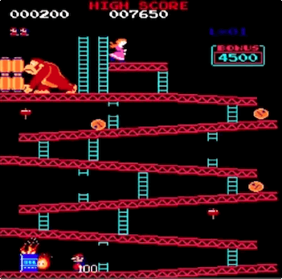

1981 – Donkey Kong
O marco zero das narrativas nos games também é celebrado por ter sido o
primeiro jogo dirigido por Shigeru Miyamoto, na época um promissor
designer da Nintendo. Em Donkey Kong, o vilão batiza o jogo, deixando
para o herói Jumpman o papel de coadjuvante (rebatizado de “Mario” anos
mais tarde, o encanador acabou tornando-se o maior protagonista da
história dos games). Inspirado pelo filme King Kong, Miyamoto
determinou a premissa do gênero “plataforma” – correr e pular para
alcançar novos caminhos -, que dominou os games durante mais de uma
década. Curiosidade: até hoje há pessoas tentando quebrar o recorde do
jogo. A disputa entre os dois principais jogadores foi retratada no
ótimo documentário King of Kong.

1985 – Super Mario Bros.

Criado por Shigeru Miyamoto, Super Mario Bros. revolucionou de cara,
obrigando o jogador a seguir sempre adiante, explorando oito mundos com
uma inédita variedade de cenários e utilizando poderes que nenhum título
oferecia. Mario pode crescer, atirar fogo, correr e saltar, além de
eliminar inimigos de maneiras diferentes. Nunca um herói virtual foi
controlado de modo tão refinado e preciso. Simples de aprender e difícil
de dominar (e largar), foi inspiração para todos os games de ação.